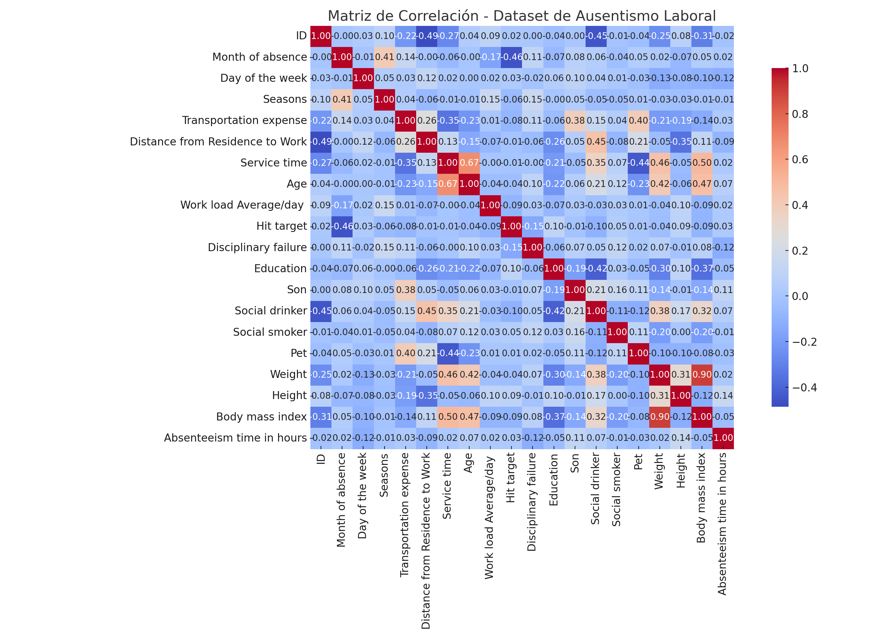

ACT1 PEC2 – Gráfico de Área
Definición y funcionamiento del gráfico
El gráfico de área es una técnica de visualización estadística basada en el gráfico de líneas. Se utiliza para representar la evolución de datos cuantitativos a lo largo del tiempo.
La diferencia principal radica en que el área entre la línea y el eje horizontal se rellena con color, lo cual ayuda a destacar el volumen y la relación entre distintas series.
Esta representación visual que combina elementos de los gráficos de líneas y de barras, rellenando el área bajo una curva. Es especialmente útil para mostrar cambios acumulativos a lo largo del tiempo
y para comparar varios grupos o categorías. Al utilizar colores degradados, se pueden asociar fácilmente pares de variables relacionadas,
como exportaciones e importaciones del mismo país.
Análisis del dataset
- Fuente: Epdata
- Tipo: Series temporales cuantitativas.
- Variables: Año, país (China/EE.UU.), exportaciones, importaciones.
- Estructura: Dataset limpio con datos por país y año (formato largo).
- Limitaciones: La comparación entre múltiples países es efectiva visualmente hasta cierto límite (demasiadas series saturan la gráfica).
El gráfico generado compara las exportaciones e importaciones de España con China y Estados Unidos a lo largo del tiempo.
Se han utilizado colores degradados por país para diferenciar claramente entre ambos tipos de relaciones comerciales.
Objetivo
Se representó la evolución de las exportaciones e importaciones de España con China y Estados Unidos desde 1995 hasta 2023.
Se utilizaron colores degradados emparejados para reflejar la vinculación entre exportación e importación de cada país.
Esta visualización permite comparar cómo ha evolucionado el comercio exterior bilateral a lo largo del tiempo. El uso del área y color
facilita la percepción del crecimiento, estancamiento o cambios abruptos. Destaca el crecimiento progresivo con China y la irregularidad con EE.UU.
Esta técnica es útil para ver y analizar tanto magnitudes absolutas como tendencias comparadas.
Hallazgos principales
- Las exportaciones e importaciones con China muestran un crecimiento constante, especialmente a partir de 2005.
- Estados Unidos presenta un volumen de comercio más alto que China en años recientes, con altibajos entre exportaciones e importaciones.
- El uso de degradado facilita la asociación visual entre exportaciones e importaciones del mismo país.
- Todas las variables analizadas están sujetas a unas tendencias de subida y bajadas muy similares.
- Las exportaciones a China son muy bajas en comparación al resto de variables y parece reaccionar de forma diferente a las tendencias generales.
Comentario de gráfica
- Definición: Gráfico de área, útil para representar datos acumulativos y comparar categorías a lo largo del tiempo.
- Datos: Cuantitativos, series temporales. Requiere datos ordenados por fecha. Idealmente con pocas categorías para no saturar.
- Visualización: Exportaciones e importaciones de España con China y EE.UU.
- Conclusión: Muestra claramente el crecimiento del comercio exterior y permite comparar su evolución. El gráfico de área ayuda a asociar visualmente exportaciones e importaciones por país.

ACT2 PEC2 – Matriz de Correlación
Definición y funcionamiento del gráfico
La matriz de correlación es una técnica estadística y visual que permite identificar la relación lineal entre pares de variables numéricas.
El valor de correlación oscila entre -1 (correlación negativa perfecta) y +1 (positiva perfecta), siendo 0 ausencia total de relación lineal.
Esta técnica se representa comúnmente mediante un heatmap o mapa de calor, en el que los colores (rojos y azules) ayudan a visualizar
la fuerza e intensidad de las correlaciones. Es ampliamente utilizada en análisis exploratorio de datos, ciencias sociales, economía y ciencia de datos.
Análisis del dataset
- Fuente: UCI Machine Learning Repository
- Tipo: Cuantitativo, multivariable.
- Observaciones: 740 registros correspondientes a empleados administrativos de una empresa.
- Variables: 21 variables entre continuas y categóricas codificadas (edad, peso, IMC, hijos, educación, etc.).
- Estructura: Cada fila representa un empleado y un episodio de ausencia. El tiempo de ausencia es la variable objetivo.
- Limitaciones: No incluye variables emocionales, psicológicas o de contexto laboral subjetivo. La variable Reason for absence fue codificada numéricamente.
Objetivo
El objetivo de esta visualización es detectar relaciones entre las variables personales, familiares y laborales que puedan estar vinculadas al ausentismo.
Se identificaron correlaciones fuertes esperadas que ayudan a ver que el dataset tiene cierta calidad, como: IMC con peso: correlación positiva alta y la edad con lo que se tarda al trabajo(Service time): correlación moderada positiva.
Hallazgos principales
- Correlaciones fuertes entre variables físicas: IMC y peso, edad y antigüedad.
- Ausencia de correlación directa entre variables personales (disciplina, educación, etc..) y el ausentismo.
- El ausentismo laboral puede depender más de factores cualitativos (estrés, clima laboral, motivación) que de los atributos medidos en el dataset.
- El dataset permite encontrar correlaciones y patrones más profundos y posteriormente predecir conductas con machine learning.
Comentario de gráfica
- Definición: Matriz de correlación que muestra relaciones lineales entre variables numéricas, representadas en mapa de calor.
- Datos: Cuantitativos continuos. Se requiere más bastantes variables numéricas y suficientes observaciones.
- Visualización: Vemos las relaciones entre variables personales y laborales de empleados y sus motivos de baja
- Conclusión: Herramienta útil para detectar relaciones esperadas y descartar predictores irrelevantes del ausentismo.

ACT3 PEC2 – Gráfico OHLC
Definición y funcionamiento del gráfico
Un gráfico OHLC (Open-High-Low-Close) muestra la evolución de un valor financiero a lo largo del tiempo, incluyendo
el precio de apertura, el máximo, el mínimo y el precio de cierre de cada jornada. Este tipo de gráfico se utiliza comúnmente en análisis técnico
para estudiar patrones de comportamiento en mercados bursátiles o similares.
Es ampliamente usado en bolsas de valores y plataformas financieras. Proporciona información crítica para la toma de decisiones de inversión.
Análisis del dataset
- Fuente: Investing.com
- Tipo: Serie temporal de datos bursátiles (o similares como criptomonedas o forex)
- Variables: Fecha, Open, High, Low, Close.
- Periodicidad: Generalmente diaria aunque se puede ver hasta de minutos
- Limitaciones: No incluye datos cualitativos (noticias, eventos económicos) ni volumen de transacciones.
Objetivo
Identificar la volatilidad diaria, mediante la diferencia entre el precio máximo y mínimo. Días con velas largas indican una mayor incertidumbre o reacción del mercado a eventos externos.
También para detectar tendencias a corto y medio plazo, como fases de crecimiento sostenido, correcciones o consolidaciones.
Hallazgos principales
- En el gráfico se aprecia una fase de crecimiento notable entre noviembre de 2024 y febrero de 2025
- Han habido dos caidas princiaples, una en los últimos días y otra entre julio y agosto de 2024.
- El precio de apertura y cierre suelen seguir tendencias similares, pero se observan diferencias marcadas en jornadas volátiles.
- La tendecia general es al alza aunque el índice ha mostrado oscilaciones pronunciadas durante los últimos meses.
Comentario de gráfica
- Definición: Gráfico OHLC (Open-High-Low-Close). Es usado en análisis financiero para representar variabilidad diaria de precios.
- Datos: Cuantitativos. Requiere columnas de fecha, apertura, máximo, mínimo y cierre. Aplicable a mercados financieros.
- Visualización: Evolución diaria del IBEX 35.
- Conclusión: Permite observar volatilidad, tendencias y comportamiento del índice en cada jornada bursátil. Ideal para análisis técnico.